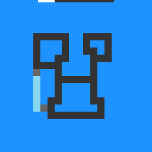

cn04
Move and rotate pieces until every red plug shares a cell with another plug to clear the level.
6 levels · 9 rules · all levels replayed in Lean
Replay
The certified run that cleared every level, one action at a time. Beside each step: the rules of the model that explain it; they are also marked in the rule list below.

Explained by
Press Play or step to load the run. Keys, while the player is on screen: ← → step, Space play / pause. A click is circled; cells that changed are outlined.
How it plays
There are several pieces of different shapes on the field, each with a red plug. Only the selected piece can be operated at a time: a direction key translates it by one cell, and the function key rotates it clockwise by a right angle; if it is a pen, the function key lengthens it by one segment or shortens it by one segment. Click another piece and the selection switches to it; click the already selected piece again and the selection is cancelled. Pieces can walk over each other and are not blocked. When two plugs land on the same cell, that cell turns grey to indicate it is welded; after they move apart each is restored. After a step, if every plug on the field overlaps another plug in the same cell, the level is cleared. Some levels paint the whole unselected piece dark and hide its plug, visible only when selected. The top bar at the very top is spent down with the steps.

Model
The final model: 4 object types and 9 rules. Each rule is a Python check against every recorded step; 8 of them are translated into Lean (the paper's per-game table). Code under a rule is the file of the same name in the agent's Lean project.
Object types
- Ground colour
groundThe background colour of this level, different in each level. - Top bar
spentThe progress bar at the very top; how many cells are already spent. - Selected piece
litIts solid cells, plug cells, pen tip and colour; the keys operate this piece. - Other pieces
restEvery non-ground cell outside the selected piece, with its shown colour.
Rules
moveA direction key shifts the selected piece one cell, never blocked; overlapping plugs show grey.Python
from __future__ import annotations from derive.look import look_of from derive.fiber import variants from derive.redraw import predict, compare from derive.relocate import shift, inside from .._common import in_level, wrap … … … HISTORY = [ … … … … ] def scope_w(w, a, nw, ctx): r = in_level(ctx) if r: return r if a not in ("ACTION1", "ACTION2", "ACTION3", "ACTION4"): … if w.lit is None: … g = shift(w.lit, a) if not inside(g[0] | g[1] | ({g[2]} if g[2] else set())): … return None def judge_w(w, a, nw, ctx): if nw.ground != w.ground or look_of(nw) != look_of(w): return False for v in variants(w): judged, ok, _ = compare(predict(v, shift(v.lit, a)), nw) if judged == ok: return True return False scope_, assert_ = wrap(scope_w, judge_w)Lean · Move.lean
import Obj.Frame.World namespace Game def shiftCell (d : Int × Int) (p : Cell) : Cell := (p.1 + d.1, p.2 + d.2) def Shape.shift (d : Int × Int) (sh : Shape) : Shape := ⟨sh.solid.map (shiftCell d), sh.plugs.map (shiftCell d), sh.head.map (shiftCell d)⟩ def Piece.shift (d : Int × Int) (p : Piece) : Piece := { p with stages := p.stages.map (Shape.shift d) } def mapAt {α : Type} (f : α → α) : Nat → List α → List α | _, [] => [] | 0, x :: xs => f x :: xs | n + 1, x :: xs => x :: mapAt f n xs def move (d : Int × Int) (s : World) : World := match s.sel with | none => s | some i => { s with pieces := mapAt (Piece.shift d) i s.pieces } end GameturnThe function key rotates a selected ordinary piece clockwise by a right angle.Python
from __future__ import annotations from derive.look import look_of from derive.fiber import variants from derive.redraw import predict, compare from derive.relocate import turn_cw, inside from .._common import in_level, wrap … … … HISTORY = [ … … … ] def scope_w(w, a, nw, ctx): r = in_level(ctx) if r: return r if a != "ACTION5": … if w.lit is None: … if w.lit.head is not None: … if not inside(turn_cw(w.lit)[0] | turn_cw(w.lit)[1]): … return None def judge_w(w, a, nw, ctx): if nw.ground != w.ground or look_of(nw) != look_of(w): return False for v in variants(w): judged, ok, _ = compare(predict(v, turn_cw(v.lit)), nw) if judged == ok: return True return False scope_, assert_ = wrap(scope_w, judge_w)Lean · Turn.lean
import Obj.Frame.World import Rule.Step.Move namespace Game def minOf (xs : List Int) : Int := xs.foldl min (xs.headD 0) def maxOf (xs : List Int) : Int := xs.foldl max (xs.headD 0) def Shape.turn (sh : Shape) : Shape := let all := sh.solid ++ sh.plugs let r0 := minOf (all.map Prod.fst) let c0 := minOf (all.map Prod.snd) let h := maxOf (all.map Prod.fst) - r0 + 1 let f : Cell → Cell := fun p => (r0 + (p.2 - c0), c0 + (h - 1 - (p.1 - r0))) ⟨sh.solid.map f, sh.plugs.map f, sh.head.map f⟩ def Piece.turn (p : Piece) : Piece := { p with stages := p.stages.map Shape.turn } def turn (s : World) (i : Nat) : World := { s with pieces := mapAt Piece.turn i s.pieces } end GamegrowThe function key lengthens or shortens a selected pen by one segment, following its script.Python
from __future__ import annotations from derive.look import look_of from .._common import in_level, wrap … HISTORY = [ … … ] def scope_w(w, a, nw, ctx): r = in_level(ctx) if r: return r if a != "ACTION5": … if w.lit is None: … if w.lit.head is None: … return None def judge_w(w, a, nw, ctx): if nw.lit is None or nw.lit.color != w.lit.color: return False before, after = w.lit.cells(), nw.lit.cells() if before == after: return False both = before | after old = {(r, c): v for (r, c, v) in w.rest if (r, c) not in both} new = {(r, c): v for (r, c, v) in nw.rest if (r, c) not in both} return old == new and nw.ground == w.ground and look_of(nw) == look_of(w) scope_, assert_ = wrap(scope_w, judge_w)Lean · Grow.lean
import Obj.Frame.World import Rule.Step.Move namespace Game def Piece.grow (p : Piece) : Piece := if p.up then (if p.k + 1 < p.stages.length then { p with k := p.k + 1 } else { p with k := p.k - 1, up := false }) else (if p.k > 0 then { p with k := p.k - 1 } else { p with k := p.k + 1, up := true }) def grow (s : World) (i : Nat) : World := { s with pieces := mapAt Piece.grow i s.pieces } end GamepickClicking another piece selects it; clicking the selected piece deselects it; clicking ground does nothing.Python
from __future__ import annotations from derive.look import look_of from derive.click import cell_of, what, component from objects.piece.lit import MARK, WELD, MASK from .._common import in_level, wrap SLEEP = 4 … … HISTORY = [ … … … ] def scope_w(w, a, nw, ctx): r = in_level(ctx) if r: return r if not a.startswith("ACTION6"): … p = cell_of(a) if p is None: … k = what(w, p) if k == "unsure": … if look_of(w) == "paint": if k == "rest" and dict(((r_, c_), v) for (r_, c_, v) in w.rest)[p] in (MARK, WELD): … if k == "lit": … return None def _same_outside(w, nw, cells): a = {(r, c): v for (r, c, v) in w.rest if (r, c) not in cells} b = {(r, c): v for (r, c, v) in nw.rest if (r, c) not in cells} if w.lit is not None: for p in w.lit.cells() - cells: a[p] = w.lit.shown(*p) if nw.lit is not None: for p in nw.lit.cells() - cells: b[p] = nw.lit.shown(*p) return a == b def judge_w(w, a, nw, ctx): if nw.ground != w.ground or look_of(nw) != look_of(w): return False p = cell_of(a) k = what(w, p) if k == "ground": return _same_outside(w, nw, frozenset()) old = w.lit.cells() if w.lit is not None else frozenset() if k == "lit": return (nw.lit is None and all(nw.color_at(*q) == SLEEP for q in old) and _same_outside(w, nw, old)) comp = component(w, p, through=old if look_of(w) == "sleep" else frozenset()) if nw.lit is None or p not in nw.lit.cells(): return False if look_of(w) == "sleep": if not nw.lit.cells() <= comp | old: return False for q in old - nw.lit.cells(): if nw.color_at(*q) != SLEEP: return False return _same_outside(w, nw, comp | old) if nw.lit.solid != comp: return False was = w.lit.solid if w.lit is not None else frozenset() shown = {nw.color_at(*q) for q in was} if len(shown) != 1 or shown & {MASK, MARK, WELD, SLEEP, w.ground}: return False return _same_outside(w, nw, comp | was) scope_, assert_ = wrap(scope_w, judge_w)Lean · Pick.lean
import Obj.Frame.World import Rule.Step.Move namespace Game def clickCell (x y : Nat) : Option Cell := if x < 2 || y < 2 then none else some (((y - 2) / 3 : Nat), ((x - 2) / 3 : Nat)) def Shape.covers (sh : Shape) (p : Cell) : Bool := sh.solid.contains p || sh.plugs.contains p || sh.head == some p def hits (s : World) (p : Cell) : List Nat := (List.range s.pieces.length).filter (fun i => (s.piece i).cur.covers p) def pick (s : World) (x y : Nat) : World := match clickCell x y with | none => s | some p => match s.sel with | some i => if (hits s p).contains i then { s with sel := none } else (match hits s p with | [] => s | j :: _ => { s with sel := some j }) | none => (match hits s p with | [] => s | j :: _ => { s with sel := some j }) end GamewinThe level advances when every plug shares its cell with at least one other plug.Python
from __future__ import annotations from derive.look import look_of from derive.fiber import variants from derive.redraw import predict from derive.relocate import shift, turn_cw, inside from objects.piece.lit import MARK from .._common import wrap … … … … … HISTORY = [ … … ] def _geo(v, a): if a in ("ACTION1", "ACTION2", "ACTION3", "ACTION4"): return shift(v.lit, a) return turn_cw(v.lit) def _outcomes(w, a): out = [] for v in variants(w): g = _geo(v, a) pred = predict(v, g) unknown = any(pred.get(p, "off") is None for p in g[1]) free = any(val == MARK for val in pred.values()) out.append((unknown, free)) return out def scope_w(w, a, nw, ctx): m = (ctx or {}).get("mark") if m == "reset": return "RESET" if a not in ("ACTION1", "ACTION2", "ACTION3", "ACTION4", "ACTION5"): … if w.lit is None: … if w.lit.head is not None: … g = _geo(w, a) if not inside(g[0] | g[1]): … outs = _outcomes(w, a) if any(u for u, _ in outs): … if len({f for _, f in outs}) > 1: … if look_of(w) == "sleep" and not outs[0][1]: … return None def judge_w(w, a, nw, ctx): won = (ctx or {}).get("mark") in ("level_up", "game_won") free = _outcomes(w, a)[0][1] return won == (not free) scope_, assert_ = wrap(scope_w, judge_w)Lean · Win.lean
import Obj.Frame.World namespace Game def plugCount (s : World) (p : Cell) : Nat := s.pieces.foldl (fun n q => n + q.cur.plugs.count p) 0 def allPlugs (s : World) : List Cell := s.pieces.flatMap (fun q => q.cur.plugs) def isGoal (s : World) : Bool := (allPlugs s).all (fun p => decide (plugCount s p ≥ 2)) end GamehudThe top bar is spent in proportion to steps taken in this level, clicks included.Python
from __future__ import annotations from .._common import wrap … HISTORY = [ … … … ] def scope_w(w, a, nw, ctx): return None def judge_w(w, a, nw, ctx): m = (ctx or {}).get("mark") if m in ("reset", "level_up"): return nw.spent == 0 return nw.spent - w.spent in (0, 1) scope_, assert_ = wrap(scope_w, judge_w)Lean · Hud.lean
import Obj.Frame.World namespace Game def spentOf (b : Board) (t : Nat) : Nat := (64 * t + b.budget) / (2 * b.budget) def tick (s : World) : World := { s with ticks := s.ticks + 1 } end GameidleWith no piece selected, direction and function keys move nothing; only a step is counted.Python
from __future__ import annotations from derive.look import look_of from .._common import in_level, wrap … HISTORY = [ … … ] def scope_w(w, a, nw, ctx): r = in_level(ctx) if r: return r if a not in ("ACTION1", "ACTION2", "ACTION3", "ACTION4", "ACTION5"): … if w.lit is not None: … return None def judge_w(w, a, nw, ctx): return nw.lit is None and nw.rest == w.rest and nw.ground == w.ground and look_of(nw) == look_of(w) scope_, assert_ = wrap(scope_w, judge_w)Lean · Idle.lean
import Obj.Frame.World import Step namespace Game theorem idle (w : World) (h : w.sel = none) : step w .up = settle w ∧ step w .down = settle w ∧ step w .left = settle w ∧ step w .right = settle w ∧ step w .five = settle w := by simp [step, move, five, h] theorem settle_keeps (w : World) : (settle w = .ok (tick w) ∨ settle w = .won (tick w)) ∧ (tick w).pieces = w.pieces ∧ (tick w).sel = w.sel := by refine ⟨?_, rfl, rfl⟩ unfold settle split · exact Or.inr rfl · exact Or.inl rfl end Gameboard_keepsWithin a level, the ground colour and drawing style never change.Python
from __future__ import annotations from derive.look import look_of from .._common import in_level, wrap … HISTORY = [ … ] def scope_w(w, a, nw, ctx): return in_level(ctx) def judge_w(w, a, nw, ctx): return nw.ground == w.ground and look_of(nw) == look_of(w) scope_, assert_ = wrap(scope_w, judge_w)Lean · BoardKeeps.lean
import Obj.Frame.World import Obs.Seen namespace Game theorem board_keeps (b₁ b₂ : Board) (w : World) (a : Act) : (fun (_ : Board) => step w a) b₁ = (fun (_ : Board) => step w a) b₂ := rfl end Gameplug_at_endPlugs sit at piece ends: each touches exactly one of its piece's solid cells.Python onlyPython
from __future__ import annotations from derive.look import look_of from .._common import wrap … HISTORY = [ … ] def scope_w(w, a, nw, ctx): if look_of(w) != "sleep": … if w.lit is None or not w.lit.plugs: … return None def judge_w(w, a, nw, ctx): body = w.lit.solid | ({w.lit.head} if w.lit.head is not None else set()) for (r, c) in w.lit.plugs: n = sum(q in body for q in ((r + 1, c), (r - 1, c), (r, c + 1), (r, c - 1))) if n != 1: return False return True scope_, assert_ = wrap(scope_w, judge_w)
Code is shown with comments and the agent's notes removed; the files as written are in the archive under Check it yourself.
Proof
For every level, Lean starts from the level's first screen, applies the model's rules to the certified actions, and checks that every computed state agrees with the recorded frame on the components the model represents, and that the last one wins. Each theorem is closed by the Lean kernel and is a statement about the learned model.
Every level can be won
theorem L0_winnable : L0_acts.length = 14 ∧ Winnable (Witness.start0 : World) := …theorem L1_winnable : L1_acts.length = 31 ∧ Winnable (Witness.start1 : World) := …theorem L2_winnable : L2_acts.length = 34 ∧ Winnable (Witness.start2 : World) := …theorem L3_winnable : L3_acts.length = 95 ∧ Winnable (Witness.start3 : World) := …theorem L4_winnable : L4_acts.length = 46 ∧ Winnable (Witness.start4 : World) := …theorem L5_winnable : L5_acts.length = 41 ∧ Winnable (Witness.start5 : World) := …theorem keyA_nowin : ∀ w a w', KeyA w → step w a ≠ .won w' := …theorem A_ctrl_winnable : Winnable (A_ctrl : World) := …theorem keyB_nowin : ∀ w a w', KeyB w → step w a ≠ .won w' := …theorem B_ctrl_winnable : Winnable (B_ctrl : World) := …What cannot be won under the model
theorem keyA_unsolvable (w : World) (h : KeyA w) : Unsolvable w := …theorem A_scene_unsolvable : Unsolvable (A_scene : World) := …theorem keyB_unsolvable (w : World) (h : KeyB w) : Unsolvable w := …theorem B_scene_unsolvable : Unsolvable (B_scene : World) := …Statements only; the proofs and the full Lean project are in the archive, with the steps to re-run them, under Check it yourself.
Check it yourself
Everything on this page comes from files you can download and check. The archive holds the agent's files: the recorded run, the concept book, the concept sources, the Lean project and the sealed model file, plus the record of our kernel check.
Download cn04.zip 0.7 MB · 56 files
Re-run the proof
Before you start: our run of this check took 74 s and 3.3 GB of memory at its peak (2026-10-23).
- Download cn04.zip and unpack it. The model and its theorems are in
archive/cn04-20260909/formal/Game.lean. Before changing it, check that its SHA-256 is8f0ab9ec07495b3b5f3d198408e848737fc876255e50678f79d16c07059923ca - Install Lean with elan, then the version named in the archive's
lean-toolchain:elan toolchain install leanprover/lean4:v4.34.0 - Copy the model file to
Check.leanand append these two lines to the copy:#print axioms consistent #print axioms faithful - In the folder that holds
Check.lean, run:lean +leanprover/lean4:v4.34.0 -M60000 Check.lean - Lean should finish without errors and print:
The first line is printed by the file itself: for each rule, how many recorded transitions meet its condition.GUARD_HITS move_up=93,move_down=158,move_left=131,move_right=115,no_block=497,overlap_draws_over=497,rot_cw=42,pen_step=45,select_click=12,swap_selection=12,sleep_wake=73,swap_sleep=76,wake_plugs=73,plug_at_deg1=425,plug_near_sleeper=90,sleep_overlay=105,uncover=388,dock_weld=411,goal_dock_wins=15,goal_needs_dock=679,hud_rate=694 'consistent' depends on axioms: [propext] 'faithful' depends on axioms: [propext]
What a pass establishes
consistent: for every recorded transition, as read by the agent's parser and with duplicates removed, every rule whose condition holds also has its effect hold. faithful: the certified run, recomputed step by step from the first screen of each level, matches the record and ends in a win. Axioms used: propext, all among Lean's standard ones.
What it does not establish: that the parser reads the screens correctly (that step runs in Python, outside Lean), or that a rule whose condition never occurs in the record is right. The Python file that produced the readings inside the model file is in the archive at meta/repair-20260928/lib/cn04-20260909/_lib.py.